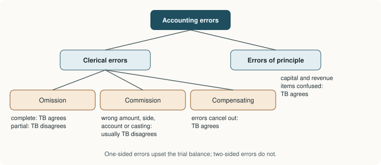

Chapter 6: Rectification of Errors¶
Finding mistakes in the books and correcting them without erasing anything
Learning outcomes
After studying this chapter you should be able to:
- Classify errors as errors of omission, commission, principle and compensating errors.
- Say which errors affect the agreement of the trial balance and which do not.
- Use practical techniques to locate errors.
- Rectify errors at each stage: before the trial balance, after it through a suspense account, and after the final accounts.
- Prepare a suspense account and compute the effect of errors on profit.
6.1 Why errors need a method¶
Errors creep into every set of books: a figure is copied wrongly, a total is added wrongly, a posting goes to the wrong account or is forgotten. Accounting has two firm rules about them. First, an error is never erased or overwritten: a clean record of what was done, and of how it was corrected, is part of the evidence on which the accounts rest. Second, an error is corrected by an entry, so that the correction itself passes through double entry and leaves a trail. This process is called rectification.
To rectify an error you need to know three things: what entry was made, what entry should have been made, and therefore what entry will turn the first into the second.
Key idea
Rectifying entry = correct entry − wrong entry. Write down the wrong entry and the correct entry side by side; the rectifying entry is whatever must be added to the accounts to move them from the first to the second.
6.2 Kinds of errors¶

Errors of omission. A transaction is left out of the books. A complete omission (the transaction is not recorded at all, in neither the book of original entry nor the ledger) does not affect the trial balance. A partial omission (the transaction is recorded in one account but not the other, for example entered in the sales book and posted to the customer but omitted from the total posted to Sales Account) does.
Errors of commission. A transaction is recorded, but wrongly: a wrong amount, a posting to the wrong side, a posting to the wrong account of the right class, a wrong total (casting) or a wrong balance carried forward. Most errors of commission affect the trial balance; a posting to the wrong account of the right class and on the right side does not.
Errors of principle. A transaction is recorded in the wrong class of account, because an accounting principle has been misapplied: capital expenditure treated as revenue expenditure (furniture debited to Purchases or to Repairs), or a revenue receipt treated as capital. The debit and credit are both made, so the trial balance agrees, but profit and the balance sheet are both wrong.
Compensating errors. Two or more errors cancel one another: a debit overstated by ₹100 in one account and a credit overstated by ₹100 in another. The trial balance agrees despite both errors.
| Error | Example | Trial balance agrees? |
|---|---|---|
| Complete omission | A credit purchase not recorded at all | Yes |
| Partial omission | Sale posted to customer but not to Sales | No |
| Wrong amount in book of original entry | Sale of ₹5,400 entered as ₹4,500 in sales book and posted from there | Yes |
| Wrong amount in posting | ₹5,400 in sales book posted to customer as ₹4,500 | No |
| Wrong side | Payment to a creditor debited to Cash | No |
| Wrong account, same class | Sale to Gupta Traders debited to Gupta Stores | Yes |
| Wrong casting | Purchases book undercast by ₹1,000 | No |
| Principle | Purchase of machinery debited to Purchases | Yes |
| Compensating | Sales overcast ₹500 and Wages overcast ₹500 | Yes |
Table 6.1. Common errors and their effect on the trial balance.
The distinction that matters for rectification is between two-sided errors, which affect both a debit and a credit equally (and so leave the trial balance in agreement), and one-sided errors, which affect only one account (and so make the trial balance disagree).
6.3 Locating errors¶
When a trial balance does not agree, the error must be found before final accounts can be relied on. Useful techniques:
- Re-add the trial balance, and check that every balance has been brought into it on the correct side.
- Halve the difference. If the difference is ₹840, look for an item of ₹420: an amount posted to the wrong side creates a difference of twice the amount.
- Divide the difference by 9. If it divides exactly, suspect a transposition (₹540 written as ₹450 gives a difference of 90) or a slide (₹540 written as ₹54 gives a difference of 486). Both differences are multiples of 9.
- Look for the exact difference. An omitted balance or an unposted item may be exactly the amount of the difference.
- Check the totals of the subsidiary books and their postings, then the balancing of each ledger account.
- Check the postings from the books of original entry to the ledger, item by item, ticking each one.
If the error still cannot be found and the final accounts must be prepared, the difference is placed temporarily in a suspense account (Section 6.5).
6.4 Rectification at different stages¶
How an error is rectified depends on when it is found.
Before the trial balance is prepared¶
- A two-sided error is rectified by a journal entry that debits one account and credits another.
- A one-sided error affects only one account, so it is corrected by an entry in that account alone, with an explanation. No journal entry is possible, because there is no second account to make it in. For example, if the sales book was undercast by ₹500, Sales Account is credited with ₹500 ("By undercasting of the sales book for May").
Example 6.1 Rectification before the trial balance
Rectify the following errors found before the trial balance was drawn up.
(a) A credit purchase of ₹4,000 from Lal was entered in the sales book.
(b) Repairs to machinery of ₹1,200 were debited to Machinery Account.
(c) The sales returns book was overcast by ₹300.
(d) ₹750 received from Verma was credited to Varma's account.
(e) Cash paid to Iqbal, ₹2,600, was posted to his account as ₹6,200.
| Error | Wrong entry | Correct entry | Rectification |
|---|---|---|---|
| (a) | Lal Dr 4,000; Sales Cr 4,000 | Purchases Dr 4,000; Lal Cr 4,000 | Journal: Purchases A/c Dr 4,000; Sales A/c Dr 4,000; To Lal 8,000 |
| (b) | Machinery Dr 1,200 | Repairs Dr 1,200 | Journal: Repairs A/c Dr 1,200; To Machinery A/c 1,200 |
| (c) | Sales Returns Dr 300 too much | One-sided: credit Sales Returns A/c ₹300 ("By overcasting of sales returns book") | |
| (d) | Varma Cr 750 | Verma Cr 750 | Journal: Varma Dr 750; To Verma 750 |
| (e) | Iqbal Dr 6,200 | Iqbal Dr 2,600 | One-sided: credit Iqbal's account ₹3,600 ("By excess posting") |
In (a), Lal's account was wrongly debited ₹4,000 and should have been credited ₹4,000, so it needs a credit of ₹8,000; Sales must lose its wrong credit (debit ₹4,000) and Purchases must receive its missing debit (₹4,000).
After the trial balance, through a suspense account¶
Once the trial balance has been prepared with the difference placed in a suspense account, every error can be rectified by a journal entry: for a one-sided error, the suspense account takes the place of the missing second account. When all the errors have been found and rectified, the suspense account is left with no balance.
After the final accounts¶
If the error is found only after the final accounts have been prepared and the books closed, the nominal accounts (revenue and expense accounts) for that year have already been closed by transfer to the profit and loss account. Correcting them in the new year would distort the new year's profit. So in the rectifying entry, every nominal account is replaced by a Profit and Loss Adjustment Account (sometimes called Prior Period Items Account). The balance of that account, which is the correction of the previous year's profit, is transferred to capital.
6.5 The suspense account¶
Example 6.2 Rectification through a suspense account
The trial balance of Joshi & Co on 31 March 2026 did not agree. The difference was placed in a suspense account, and the final accounts were drafted showing a net profit of ₹42,000. The following errors were later discovered:
(a) The sales book was overcast by ₹1,000.
(b) Furniture bought for ₹8,000 was debited to Purchases Account.
(c) A credit sale of ₹2,500 to Mohan was not recorded at all.
(d) A payment of ₹1,800 to Sohan, a creditor, was posted to his account as ₹1,080.
(e) A discount of ₹300 allowed to Ram was credited to his account but not debited to Discount Allowed Account.
(f) Wages of ₹1,500 paid for installing a new machine were debited to Wages Account.
(g) Goods of ₹600 returned by Gopal, a customer, were entered in the purchases returns book.
(h) The purchases book was undercast by ₹2,000.
Pass rectifying entries, prepare the suspense account and find the corrected net profit.
Analysis.
| Error | One- or two-sided | Effect on the trial balance |
|---|---|---|
| (a) | One-sided (Sales overstated) | Credit side too high by 1,000 |
| (b) | Two-sided, principle | None |
| (c) | Two-sided, complete omission | None |
| (d) | One-sided (Sohan debited 720 too little) | Debit side too low by 720 |
| (e) | One-sided (discount not debited) | Debit side too low by 300 |
| (f) | Two-sided, principle | None |
| (g) | Two-sided, wrong book | None |
| (h) | One-sided (Purchases understated) | Debit side too low by 2,000 |
The debit side was short by 1,000 + 720 + 300 + 2,000 = ₹4,020, so the suspense account was opened with a debit balance of ₹4,020.
Journal (rectifying entries)
| Particulars | Dr (₹) | Cr (₹) | |
|---|---|---|---|
| (a) | Sales A/c ... Dr | 1,000 | |
| To Suspense A/c | 1,000 | ||
| (Being the overcasting of the sales book corrected) | |||
| (b) | Furniture A/c ... Dr | 8,000 | |
| To Purchases A/c | 8,000 | ||
| (Being furniture wrongly debited to Purchases) | |||
| (c) | Mohan ... Dr | 2,500 | |
| To Sales A/c | 2,500 | ||
| (Being an unrecorded credit sale now recorded) | |||
| (d) | Sohan ... Dr | 720 | |
| To Suspense A/c | 720 | ||
| (Being ₹1,800 posted as ₹1,080 corrected) | |||
| (e) | Discount Allowed A/c ... Dr | 300 | |
| To Suspense A/c | 300 | ||
| (Being discount allowed not posted to its account) | |||
| (f) | Machinery A/c ... Dr | 1,500 | |
| To Wages A/c | 1,500 | ||
| (Being installation wages capitalised) | |||
| (g) | Sales Returns A/c ... Dr | 600 | |
| Purchases Returns A/c ... Dr | 600 | ||
| To Gopal | 1,200 | ||
| (Being return inwards wrongly entered in the purchases returns book) | |||
| (h) | Purchases A/c ... Dr | 2,000 | |
| To Suspense A/c | 2,000 | ||
| (Being the undercasting of the purchases book corrected) |
For (g): the wrong entry debited Gopal ₹600 and credited Purchases Returns ₹600; the correct entry debits Sales Returns ₹600 and credits Gopal ₹600. Gopal therefore needs a credit of ₹1,200, and Purchases Returns must lose its wrong credit.
Suspense Account
| Particulars | ₹ | Particulars | ₹ |
|---|---|---|---|
| To Difference in trial balance | 4,020 | By Sales A/c (a) | 1,000 |
| By Sohan (d) | 720 | ||
| By Discount Allowed A/c (e) | 300 | ||
| By Purchases A/c (h) | 2,000 | ||
| Total | 4,020 | Total | 4,020 |
The suspense account is closed: all the errors have been found.
Effect on profit. Only errors that touch a revenue or expense account change the profit.
| Error | Effect on net profit | ₹ |
|---|---|---|
| (a) Sales reduced | Decrease | (1,000) |
| (b) Purchases reduced | Increase | 8,000 |
| (c) Sales increased | Increase | 2,500 |
| (d) Personal accounts only | None | 0 |
| (e) Discount allowed (expense) increased | Decrease | (300) |
| (f) Wages reduced | Increase | 1,500 |
| (g) Sales returns up ₹600 and purchases returns down ₹600 | Decrease | (1,200) |
| (h) Purchases increased | Decrease | (2,000) |
| Net effect | Increase | 7,500 |
| ₹ | |
|---|---|
| Net profit as drafted | 42,000 |
| Add: Net effect of rectification | 7,500 |
| Corrected net profit | 49,500 |
The increases total 8,000 + 2,500 + 1,500 = 12,000 and the decreases 1,000 + 300 + 1,200 + 2,000 = 4,500; 12,000 − 4,500 = 7,500.
Caution
Do not use the suspense account for a two-sided error. If both the debit and the credit of the original entry were made, the error did not create the difference, and passing its rectification through the suspense account would put the suspense account out of balance. Ask first: did this error, on its own, make the trial balance disagree? Only if the answer is yes does the suspense account appear in its rectifying entry.
Balance sheet treatment of a remaining suspense balance¶
If the final accounts must be prepared before all the errors are found, an unexplained suspense balance is shown temporarily in the balance sheet: a debit balance among the assets, a credit balance among the liabilities. It is a sign that the books are not yet correct, and it should be cleared as soon as the errors are traced.
6.6 Rectification in the next accounting period¶
Example 6.3 Errors found after the books are closed
Errors (b), (c) and (f) of Example 6.2 are discovered only in May 2026, after the 2025-26 accounts have been closed. Rectify them in the books of 2026-27.
| Error | Particulars | Dr (₹) | Cr (₹) |
|---|---|---|---|
| (b) | Furniture A/c ... Dr | 8,000 | |
| To Profit and Loss Adjustment A/c | 8,000 | ||
| (c) | Mohan ... Dr | 2,500 | |
| To Profit and Loss Adjustment A/c | 2,500 | ||
| (f) | Machinery A/c ... Dr | 1,500 | |
| To Profit and Loss Adjustment A/c | 1,500 | ||
| Profit and Loss Adjustment A/c ... Dr | 12,000 | ||
| To Capital A/c | 12,000 | ||
| (Being the correction of last year's profit transferred to capital) |
Purchases, Sales and Wages for 2025-26 were already closed to the profit and loss account, so they are replaced by Profit and Loss Adjustment Account. The three corrections together raise last year's profit by 8,000 + 2,500 + 1,500 = ₹12,000, which belongs to the owner and is credited to capital. (Strictly, depreciation on the furniture and machinery for the part of the year they were held would also need correcting; it is ignored here for simplicity.)
6.7 Errors and the financial statements¶
Some errors change profit; others change only the balance sheet; some change both. A useful way to think about any error is to trace its effect through the statements:
| Error | Profit | Balance sheet |
|---|---|---|
| Revenue expenditure treated as capital (repairs debited to Machinery) | Overstated | Assets overstated |
| Capital expenditure treated as revenue (machinery debited to Repairs) | Understated | Assets understated |
| Closing inventory overstated | Overstated this year; understated next year | Assets overstated |
| Credit sale omitted | Understated | Debtors understated |
| Wrong personal account debited | No effect | Individual balances wrong; totals right |
| Outstanding expense not recorded | Overstated | Liabilities understated |
Table 6.2. How some common errors affect profit and the balance sheet.
The case of closing inventory shows why errors matter beyond one year: this year's closing inventory is next year's opening inventory, so an overstatement raises this year's profit and lowers next year's by the same amount.
6.8 Summary¶
Summary
- Errors are rectified by entries, never by erasing. Rectifying entry = correct entry − wrong entry.
- Errors are of omission, commission, principle or compensating. Two-sided errors leave the trial balance in agreement; one-sided errors do not.
- To locate errors, re-add, halve the difference (wrong side), divide by 9 (transposition or slide), look for the exact amount, and check the books and postings.
- Before the trial balance, two-sided errors are corrected by journal entries and one-sided errors by a note in the account affected.
- After the trial balance, a suspense account holds the difference and acts as the second account in the rectification of one-sided errors; when all errors are found it closes.
- After the final accounts, nominal accounts in rectifying entries are replaced by a Profit and Loss Adjustment Account, whose balance goes to capital.
- Only errors that touch revenue or expense accounts change profit.
6.9 Exercises¶
Exercise 1
Classify each error and say whether it affects the agreement of the trial balance: (a) ₹2,000 paid for office repairs debited to Building Account; (b) a sale of ₹3,600 to Nisha posted to her account as ₹6,300; (c) a purchase of ₹1,500 from Ali not recorded at all; (d) the wages account undercast by ₹200 and the commission received account undercast by ₹200.
Answer
(a) Error of principle; trial balance agrees. (b) Error of commission (transposition in posting); trial balance does not agree (difference ₹2,700, which is 9 × 300). (c) Complete omission; agrees. (d) Compensating errors; agrees.
Exercise 2
Pass rectifying entries (no suspense account): (a) ₹5,000 received from Dinesh credited to Mahesh; (b) purchase of a typewriter for ₹12,000 debited to Purchases; (c) goods of ₹2,200 bought from Raju entered in the sales book.
Answer
| Particulars | Dr (₹) | Cr (₹) | |
|---|---|---|---|
| (a) | Mahesh ... Dr | 5,000 | |
| To Dinesh | 5,000 | ||
| (b) | Office Equipment A/c ... Dr | 12,000 | |
| To Purchases A/c | 12,000 | ||
| (c) | Purchases A/c ... Dr | 2,200 | |
| Sales A/c ... Dr | 2,200 | ||
| To Raju | 4,400 |
Exercise 3
A trial balance showed the credit side short by ₹2,450, and the difference was put to a suspense account. Errors found: (a) the total of the sales book, ₹28,450, was posted to Sales Account as ₹27,000; (b) a payment of rent ₹1,000 was correctly entered in the cash book but not posted to Rent Account; (c) commission received of ₹1,000 was posted to the debit of Commission Received Account. Pass the entries and prepare the suspense account.
Answer
(a) Sales credited ₹1,450 too little: Suspense A/c Dr 1,450; To Sales A/c 1,450.
(b) Rent debit missing: Rent A/c Dr 1,000; To Suspense A/c 1,000.
(c) Commission debited ₹1,000 instead of credited ₹1,000, so it needs a credit of ₹2,000: Suspense A/c Dr 2,000; To Commission Received A/c 2,000.
Suspense Account
| Particulars | ₹ | Particulars | ₹ |
|---|---|---|---|
| To Sales A/c | 1,450 | By Difference in trial balance | 2,450 |
| To Commission Received A/c | 2,000 | By Rent A/c | 1,000 |
| Total | 3,450 | Total | 3,450 |
The credit side was short, so the suspense account opened with a credit balance of ₹2,450. Check: errors (a) and (c) made the credit side short by 1,450 + 2,000 = 3,450, and error (b) made the debit side short by 1,000, so the net shortfall on the credit side was 3,450 − 1,000 = 2,450. The account closes.
Exercise 4
A firm's draft net profit is ₹75,000. Find the corrected profit if: (a) closing inventory was undervalued by ₹4,000; (b) a machine bought for ₹20,000 was debited to Purchases; (c) rent of ₹3,000 received from a tenant was credited to the tenant's personal account instead of Rent Received Account; (d) a sale of ₹6,000 was recorded twice.
Answer
(a) +4,000; (b) +20,000; (c) +3,000 (an income was left out of the profit and loss account); (d) −6,000. Corrected profit = 75,000 + 4,000 + 20,000 + 3,000 − 6,000 = ₹96,000.
Exercise 5
Explain why a suspense account should not be used to rectify an error of principle.
Answer
An error of principle records both a debit and a credit of equal amount, only in the wrong class of account. It does not create any difference in the trial balance, so it is not part of the suspense balance. Rectifying it through suspense would put an amount into the suspense account that was never in it, leaving the account out of balance.
Exercise 6
The difference in a trial balance is ₹810. Suggest two kinds of error to look for first.
Answer
₹810 is divisible by 9 (810 = 9 × 90), so look for a transposition (for example ₹1,900 written as ₹1,090, a difference of 810), and half of 810 is ₹405, so look for an item of ₹405 posted to the wrong side.
6.10 Quiz¶
Check your understanding of Chapter 6
Exercise 1
Which error will cause the trial balance to disagree?
- Purchase of furniture debited to Purchases
- A credit sale omitted completely
- The sales book overcast by ₹500
- Two equal errors on opposite sides
Answer
The sales book overcast by ₹500
Exercise 2
Repairs to a building, ₹5,000, debited to Building Account. The effect on profit is that it is
- overstated by ₹5,000
- understated by ₹5,000
- unaffected
Answer
overstated by ₹5,000
An expense has been treated as an asset, so expenses are too low and profit too high.
Exercise 3
Errors found after the books are closed are rectified by replacing nominal accounts with
- the suspense account
- the capital account
- the profit and loss adjustment account
- the trading account
Answer
the profit and loss adjustment account
Exercise 4
The trial balance difference is ₹360. Half of it suggests looking for an item posted to the wrong side. What amount, in rupees?
Answer
180 / ₹180
Exercise 5
Goods returned by a customer were entered in the purchases returns book. The rectifying entry credits the customer with
- the amount of the return
- twice the amount of the return
- nothing
Answer
twice the amount of the return
The customer was wrongly debited and should have been credited, so a credit of twice the amount is needed.
Exercise 6
A suspense account with a debit balance at the trial balance stage means that, before the suspense account was added,
- the debit total was smaller than the credit total
- the credit total was smaller than the debit total
Answer
the debit total was smaller than the credit total